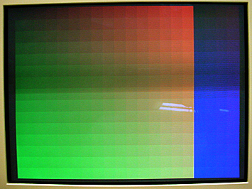
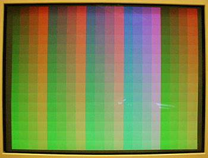
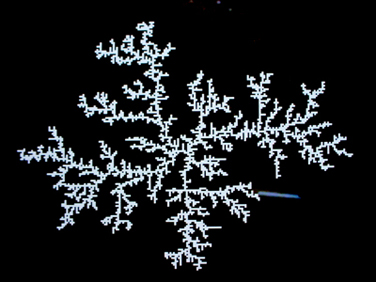
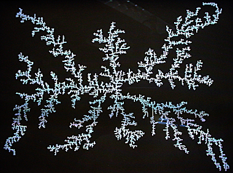
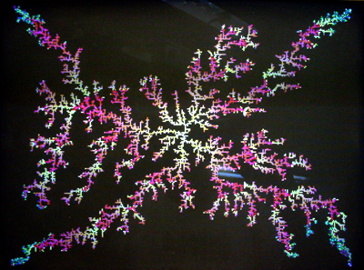
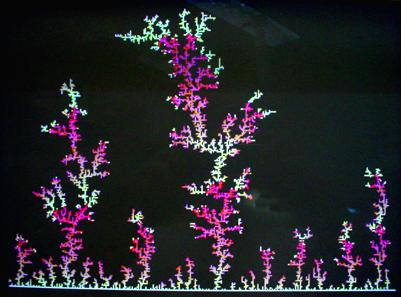
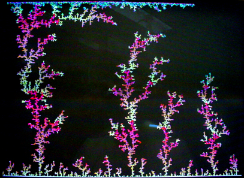
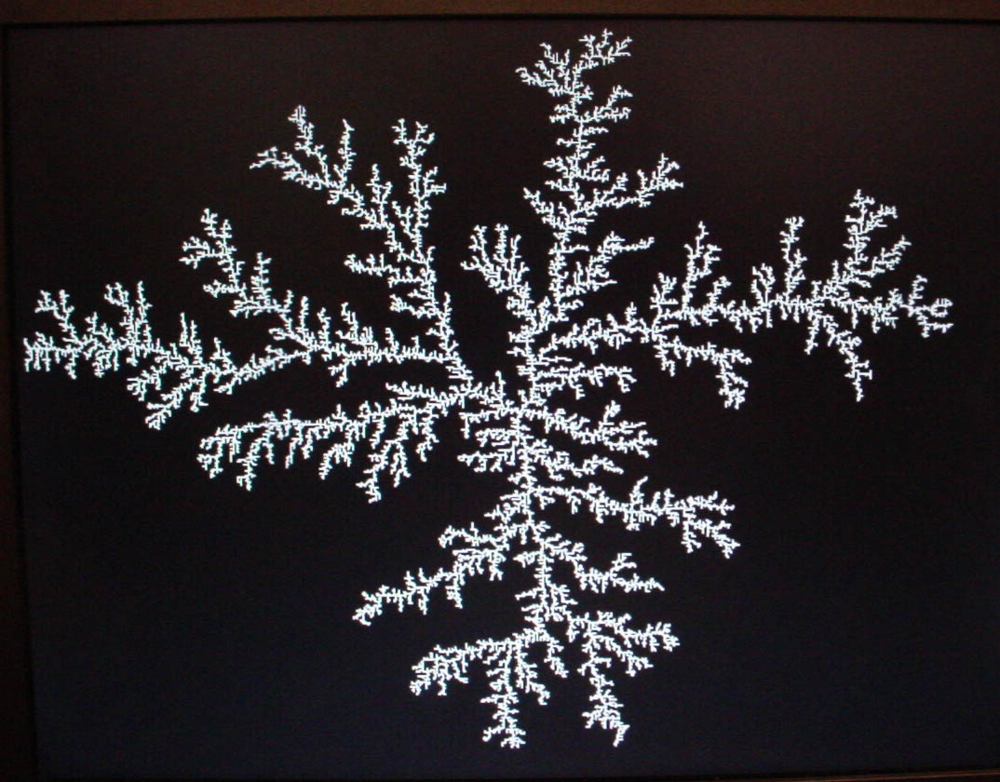

DE2 VGA examples
ECE 576 Cornell University
The following are examples which use the VGA interface on the DE2 board to produce a display from the FPGA. Both static RAM and M4K blocks are used for display memory, with varying depth of color. Some useful background:
A student (Skyler Schneider 2010) has written an improved VGA control module. (The controller, the parameters).
If you use this you will need to use a PLL to generate a 25.175 MHz clock to feed the VGA control clock input (can be 25.2).
You cannot use Skyler's PLL module on the Cyclone5. It was written for Cyclone2.
See also page 4-20 in the Cyclone5 description, particularly Figure 4-23: Fractional PLL High-Level Block Diagram for Cyclone V Devices.
His useage notes:
- Suppose an outer module M instantiates the VGA_Controller module with clock signal VGA_CTRL_CLK. oCoord_X and oCoord_Y specify a pixel. Upon a rising edge of VGA_CTRL_CLK, signaling a new clock cycle, their values are set. During that next clock cycle, module M should use the values of oCoord_X and oCoord_Y to determine what the color of that pixel should be, but module M should not yet report that color back to VGA_Controller. After the next rising edge of VGA_CTRL_CLK, module M should assert the values of iRed, iGreen, and iBlue. Upon the next rising edge of VGA_CTRL_CLK after that, the VGA_Controller buffers the asserted RGB input and reports it to the VGA screen. So, the timing goes like this:
- TICK oCoord_X and oCoord_Y are set.
- TICK iRed, iGreen, and iBlue are set.
- TICK oVGA_R, oVGA_G, and oVGA_B are set. The process is pipelined, so the current values of iRed, iGreen, and iBlue will not correspond to the current values of oCoord_X and oCoord_Y, nor the current value of oVGA_R, oVGA_G, and oVGA_B.
- Although the calculation of oAddress should be correct theoretically, I did not use it in Lab 1 and therefore did not test it.
- The behavior when using iCursor inputs has not been tested and may be incorrect.
- The timing parameters specified in VGA_Param.h have been modified from their previous values to better work with the DELL screens in lab. The front and back porch lengths have been changed to try to center the screen at default settings. The horizontal sync pulse length has also been shortened, which helps remove some jitter.
- VGA examples
- The first example displays a 320x240 image on a 640x480 raster using external SRAM. The color depth is 12 bits/pixel (4 bits/primary/pixel). When first powered up, SRAM contains random bits. Pressing KEY1 writes a 20x15 grid of colors to memory. Holding KEY2 while pressing KEY1 write a single color to SRAM, as determined by the upper 12 bits of switches. SW[15:12] is red intensity, SW[11:8] is green, SW[7:4] is blue. The VGA driver, PLL, and reset controller from the DE2 CDROM are necessary to compile this example. All the files are in this zip. An image is below. There is a dim scan bar across the middle of the frame caused by the digital camera.

- The second example displays a 640x480 image on a 640x480 raster with a color depth of 8 bits/pixel using external SRAM. The color map is shown below. There are 16 levels of green (vertically), 4 levels of red and 4 levels of blue. Both red and blue increase in intensity from left to right (except for the last four columns on the right where there is no blue). In the first 4 columns, blue intensity is zero, becoming full intensity in columns 13-16. You could build a color lookup table to produce more distinct colors than the linear set displayed here.

- The third VGA example generates a 320x240 diffusion-limited-aggregation (DLA) using external SRAM. A DLA is a clump formed by sticky particles adhering to an existing structure. In this design, we start with one pixel at the center of the screen and allow a random walker to bounce around the screen until it hits the pixel at the center. It then sticks and a new walker is started randomly at one of the 4 corners of the screen. The random number generators for x and y steps are XOR feedback shift registers (see also Hamblen, Appendix A). The VGA driver, PLL, and reset controller from the DE2 CDROM are necessary to compile this example. All the files are in this zip. A short mpg (1.3 Mbyte) shows the initial stages of the simulation. The first image below is at an earlier time in the simulation than the second image. When the structure is larger, there is a bias to grow toward the corners because that is where new walkers were released. The program is structured as a state machine which processes walker updates only during vertical or horizontal sync intervals when external SRAM is not needed to update the screen. Note that you must push KEY0 to start the state machine.
 
A minor change in the design results in colors. The 12-bit color vector (see VGA example 1 above) was just decremented for every new walker. Since the ordering is high bits for red, mid bits for green, low bits for blue, the color starts at white, fades to yellow, then red, then cycles in a complicated fashion.

Another minor modification of the design results in a "forest". In this case, the entire bottom of the screen was the starting seed and the walker release sites were uniformly distributed across most of the top of the screen The second image below shows the simulation after it has reached the top of the screen. At this point, every walker is immedately immobilized and growth stops as shown in the second image following. This design version has several states merged to take advantage of hardware parallelism. Memory access is, of course, serial. The walker release sites were modifed to cover approximately the top two-thirds of the screen.
 
- The fourth VGA example uses M4K blocks to generate a 640x480 version of the DLA explained above. One major advantage of the M4K blocks are that they are dual-ported, so it is possible to compute the cellular automaton and update the VGA display simultaneously. The top-level module defines a large M4K memory using a memory Megawizard module, then runs a state machine. The state machine produces about 3 million diffusion updates/sec. The project is zipped here. A 320x240 version is also available.

- This example implements a ROM character generator for VGA, based on the data from ECE 320 at BYU. The file from BYU is here, and the matlab program to convert it to an Altera mif file is here, and the mif file is here. The ascii character code is multiplied by 16 to from the base index for a character. The data at the base index location is the top byte (of 16) of the character image. The high order bit of the byte is the left-most pixel of the top line of the character. The code and project are on the stack machine page.
Reference
JO Hamblen, TS Hall and MD Furman, Rapid protoyping of digital systems: SOPC edition , Springer 2008
{kind=link}